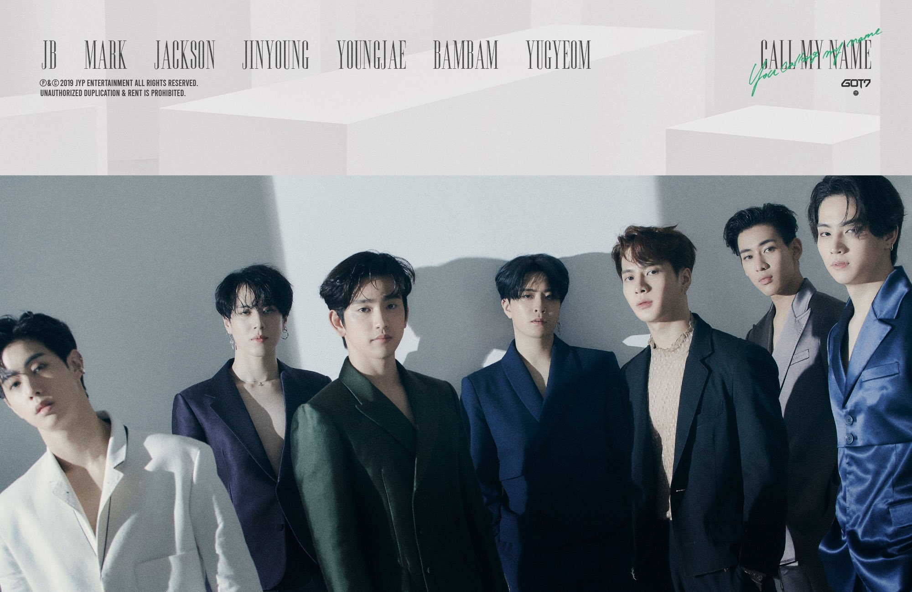
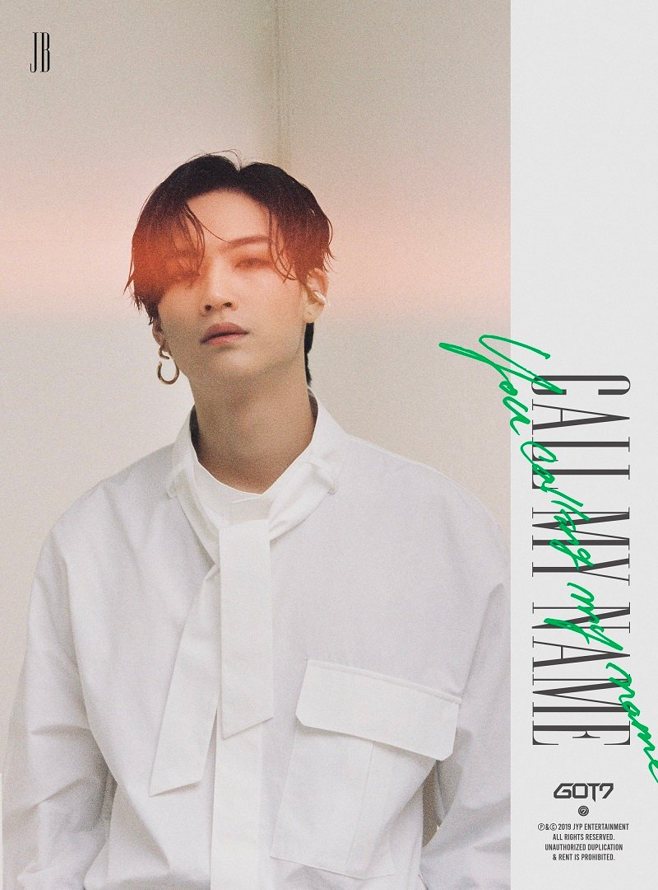
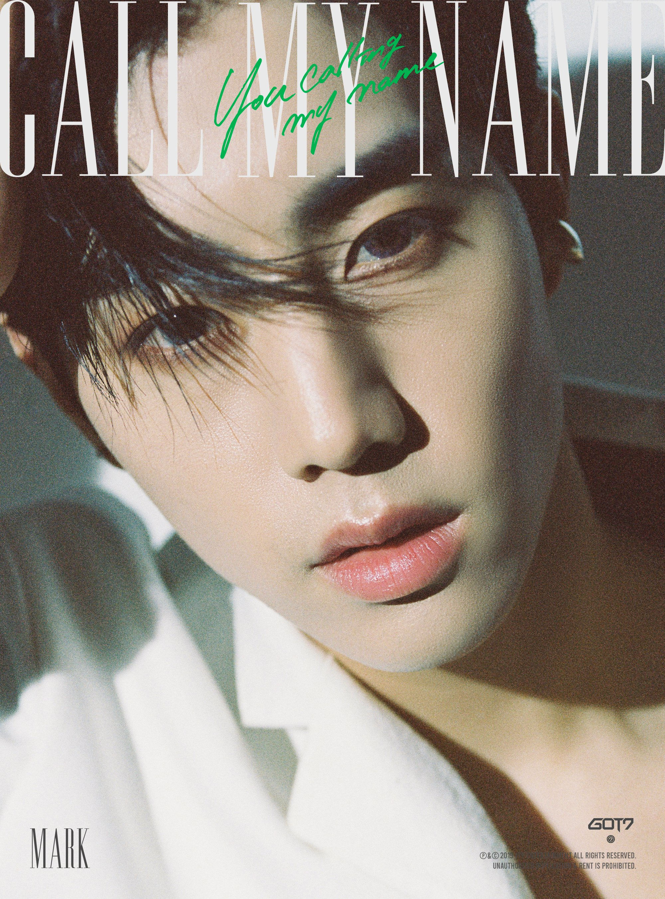
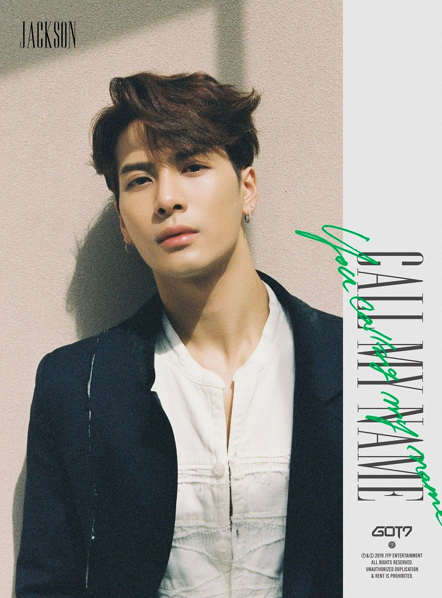
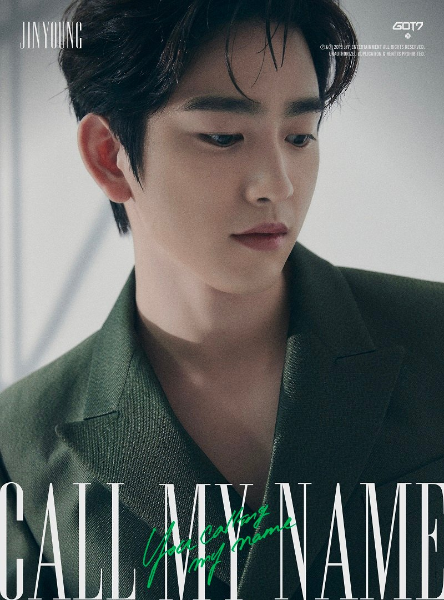
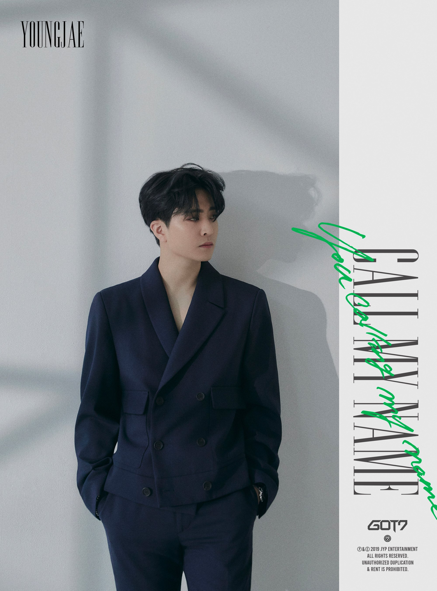
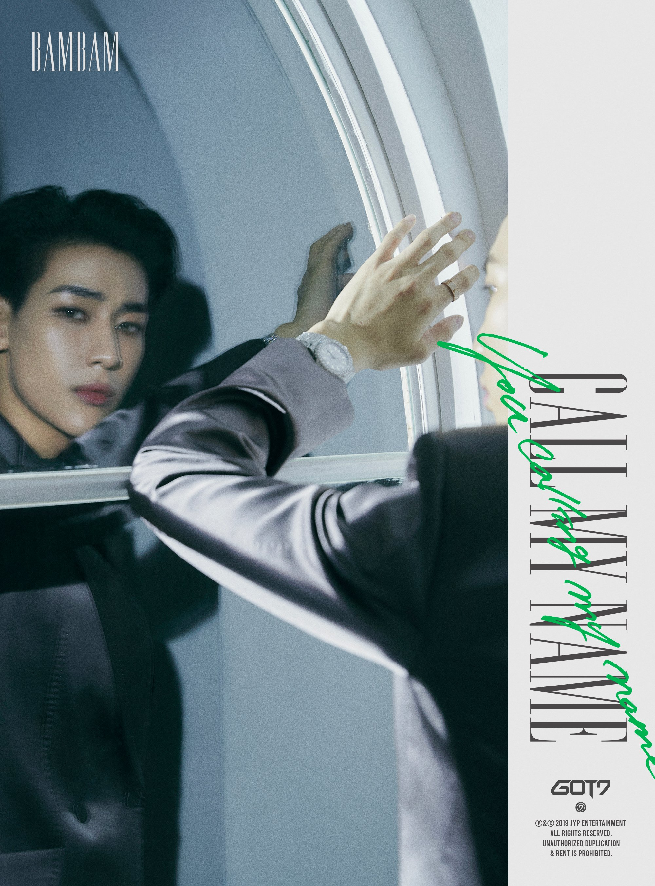
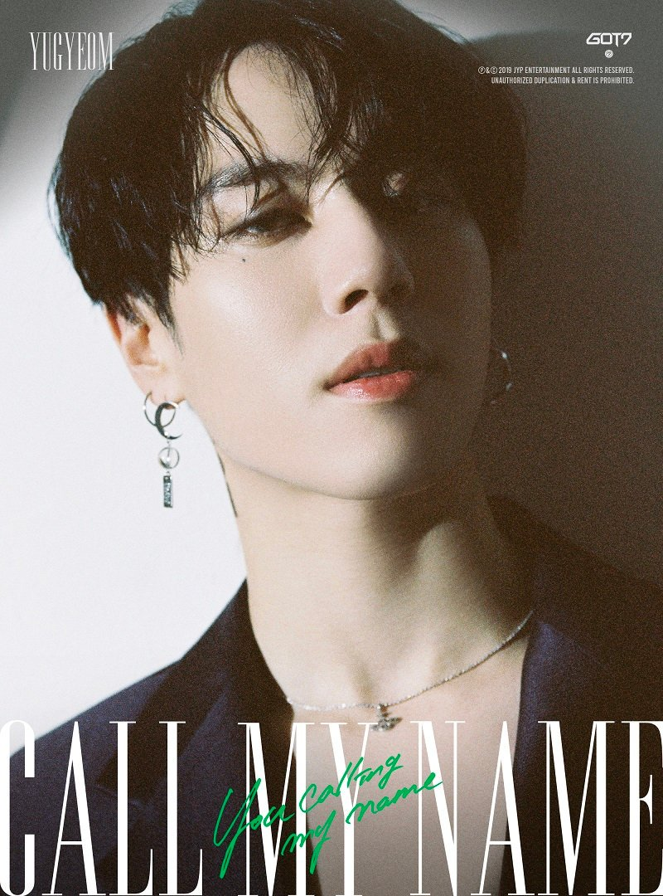

GOT7 (갓세븐) là nhóm nhạc nam gồm 7 thành viên: JB, Mark, Jackson, Jinyoung, Youngjae, BamBam, Yugyeom. GOT7 ra mắt vào ngày 16 tháng 1 năm 2014 dưới sự quản lý của công ty JYP Entertainment.

Thông tin Profile GOT7
Thông tin Profile GOT7
- Tên Fandom: I GOT7 (Ahgase)
- Màu Light Stick chính thức: Green and White
- Tài khoản chính thức:
- Twitter: @got7official
- Instagram: @got7.with.igot7
- Facebook: GOT7Official
- Youtube: GOT7
- Vlive: GOT7

JB
JB
- Nghệ danh: JB
- Tên thật: Im Jae Bum (임재범)
- Quốc tịch: Hàn Quốc
- Ngày sinh: 06/01/1994
- Vị trí: Leader, Main Vocalist, Lead Dancer, Center
- Cung hoàng đạo: Ma Kết
- Chiều cao: 179cm
- Cân nặng: 66kg
- Nhóm máu: A

Mark
Mark
- Nghệ danh: Mark (마크)
- Tên thật: Mark Yi En Tuan (段宜恩)
- Quốc tịch: Mỹ (gốc Đài Loan)
- Vị trí: Main Rapper, Lead Dancer, Sub-Vocalist, Visual
- Ngày sinh: 04/09/1993
- Cung hoàng đạo: Xử Nữ
- Chiều cao: 175cm
- Cân nặng: 59kg
- Nhóm máu: A

Jackson
Jackson
- Nghệ danh: Jackson (잭슨)
- Tên thật: Wang Jia Er / Wang Ka Yee (王嘉爾)
- Tên tiếng Anh: Jackson Wang
- Quốc tịch: Trung Quốc(Hong Kong)
- Vị trí: Lead Rapper, Lead Dancer, Sub-Vocalist, Face of The Group
- Ngày sinh: 28/03/1994
- Cung hoàng đạo: Bạch Dương
- Chiều cao: 174.8cm
- Cân nặng: 63kg
- Nhóm máu: O

Jinyoung
Jinyoung
- Nghệ danh: Jinyoung (trước đây gọi là Jr.) (진영)
- Tên thật: Park Jin Young (박진영)
- Quốc tịch: Hàn Quốc
- Vị trí: Lead Vocalist, Lead Dancer, Rapper, Visual, Center, Face of The Group
- Ngày sinh: 22/09/1994
- Cung hoàng đạo: Xử Nữ
- Chiều cao: 178cm
- Cân nặng: 63kg
- Nhóm máu: O

Youngjae
Youngjae
- Nghệ danh: Youngjae (영재)
- Tên thật: Choi Young Jae (최영재)
- Quốc tịch: Hàn Quốc
- Vị trí: Main Vocalist
- Ngày sinh: 17/09/1996
- Cung hoàng đạo: Xử Nữ
- Chiều cao: 177cm
- Cân nặng: 64kg
- Nhóm máu: B

Bambam
Bambam
- Nghệ danh: BamBam (뱀뱀)
- Tên thật: Kunpimook Bhuwakul Bambam (กันต์พิมุกต์ ภูวกุล)
- Quốc tịch: Thái Lan
- Vị trí: Lead Rapper, Lead Dancer, Sub-Vocalist
- Ngày sinh: 02/05/1997
- Cung hoàng đạo: Kim Ngưu
- Chiều cao: 178cm
- Cân nặng: 60kg
- Nhóm máu: B

Yugyeom
Yugyeom
- Nghệ danh: Yugyeom (유겸)
- Tên thật: Kim Yu Gyeom (김유겸)
- Quốc tịch: Hàn Quốc
- Vị trí: Main Dancer, Lead Vocalist, Rapper, Maknae
- Ngày sinh: 17/11/1997
- Cung hoàng đạo: Bò Cạp
- Chiều cao: 182cm
- Cân nặng: 64kg
- Nhóm máu: A